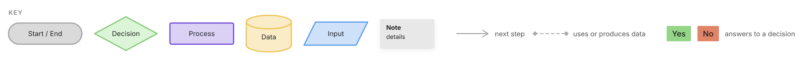

Narrative-driven video game
Peaceland

A narrative video game about a country 30 years after a civil war.
Players relive survivors’ memories in a museum, and their choices shape its future.
How can a game help young people move past divisions from a war they never lived through?
We developed it in three directions: the player experience, an authentic look built from real references, and research on inherited bias. By the end, players had switched from the character most like them to another, they called the world “very authentic,” and the research became a Schwartz Discover Scholar project with a team to carry it on.
 Trailer
Watch Peaceland
Opens on YouTube
Trailer
Watch Peaceland
Opens on YouTube
Process
Click a diagram to zoom in

What we built
Click an image to zoom in
I made all of the art choices. I led characterization and art research, so every character, place and artifact was researched and chosen before the Art Team drew it. These drawings will be remodeled in 3D for the game.
Scenes
Museum artifacts · first sketches
Characters
Results
Many players first bonded with the character most “like them.” By the end, they had switched.
What players said
“Why are Americans explaining the war to us again?”
“Very authentic.”
Two playtesters, aged 32 and 57, said the game felt not only about them, but for them.
Playtests
40+players tested the prototype as we iterated on their feedbackRegions
4international regions for playtests and stakeholder interviewsLanguages
3languages for the research and playtestsWhat players noticed
The art
The museum tree, the town square updating, and the living-room details: crochet, wallpaper and plants.
What players noticed
Authentic props
The memorial chocolate cake, packing the suitcase, the bakery and the ID badge art.
What players did
Read every line
Every player read every line of the story, including the disclaimer.
The metric I’d track next
A short survey before and after playing, to measure the change in bias directly instead of through interviews alone.
Recognition
Award · 2026
Schwartz Discover Scholar
Named by the University of Rochester for full-time summer 2026 research on Peaceland, which I presented at the Schwartz Discover Scholar Showcase.
Exhibition · April 25, 2026
Imagine RIT
Presented Peaceland and its prototype to visitors.

Reflection
Reflection
What I learned
I learned that bias is taught, and that design taste can be developed and adjusted to each project. Until Peaceland, I had been far too comfortable in my own art and design style. This project expanded the limits of what I can create collaboratively, and of what I’m able to achieve.
What I’d change next
After the playtests, I’d change how the game is presented to players and add more language options. I’d also make the consequences of each choice more visible, add more memories and real-life scenarios, and playtest with a bigger group, including other parts of the world.
Where Peaceland stands
After two years of research, three summers of onboarding and a fully playtested Romeo & Juliet memory, Peaceland has a clear design goal and a team structure built to sustain it, and it is open to more undergraduate researchers. The biggest wins were art, story and authenticity; the biggest open work is pacing, decision-making and minigame depth.
Research question · Schwartz Discover Scholar“How might a video game about a fictional post-war country reduce inherited bias among people living in countries which have experienced brutal conflicts?”